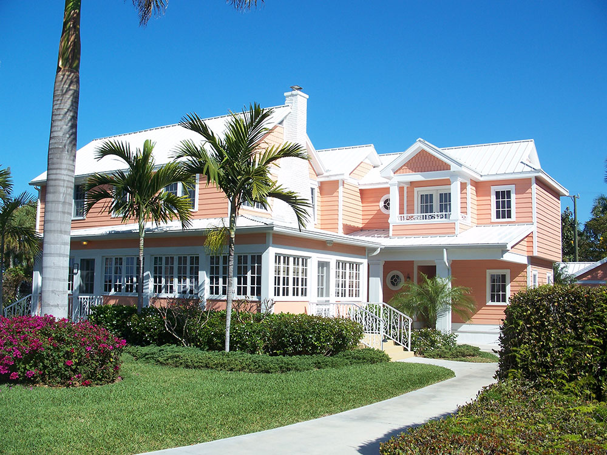
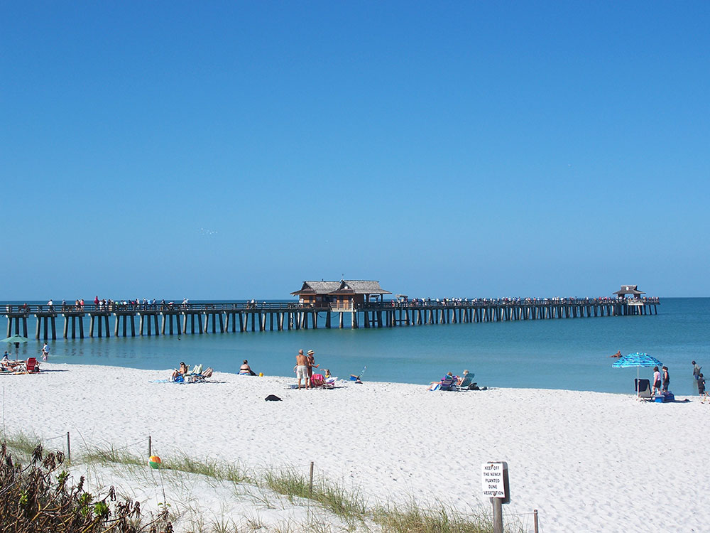
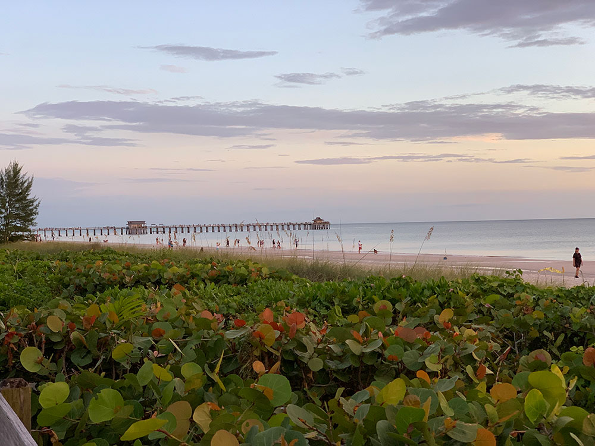
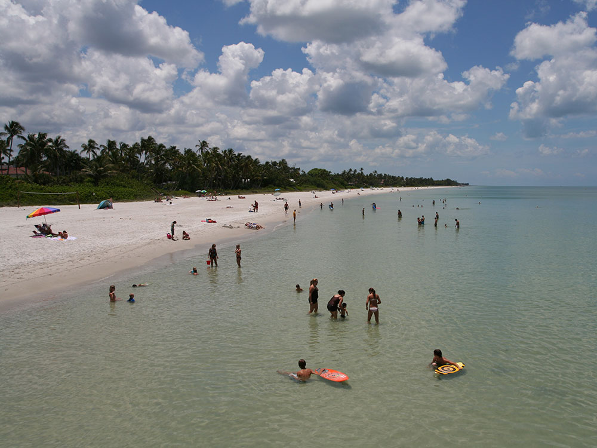

City and area is home to several major land reserves, including the Corkscrew Swamp Sanctuary, Picayune Strand State Forest, and several national protected areas
General Information
How to Get There
Overview
Naples is an upscale city on Florida's southwest Gulf Coast, known for its white sand beaches, its golf courses, its high-end shopping and dining on Fifth Avenue South, and its elegant resort atmosphere. It is one of the wealthiest cities in the United States per capita and has more golf holes per capita than almost any other city. The city is also the gateway to the Everglades and the Ten Thousand Islands, with wild areas just a short drive away.
Visitors come to Naples for the beaches and the historic Naples Pier, for shopping and dining on Fifth Avenue South and Third Street South, and for the Naples Botanical Garden. They also come for the golf, for boat trips to Marco Island and the Ten Thousand Islands, and for nature at Corkscrew Swamp Sanctuary and Big Cypress National Preserve.
History
The area was home to the Calusa people for thousands of years, and the city was founded in 1886 by a group of Kentucky developers, who thought the bay resembled the Bay of Naples in Italy. For decades it was a remote fishing village, and the Tamiami Trail, completed in 1928, connected it to Tampa and Miami. A railroad and, later, air conditioning and the 1960s development of golf communities made it a popular winter retreat. The city was damaged by Hurricane Irma in 2017 and Hurricane Ian in 2022, and has since rebuilt.
Sightseeing and Popular Landmarks
The Naples Pier, first built in 1888, stretches into the Gulf and is a favorite spot for fishing and sunsets, and Fifth Avenue South is a street of boutiques, galleries, and restaurants. The Naples Botanical Garden has themed gardens with plants from the tropics, and the Naples Zoo at Caribbean Gardens has a large collection of animals. Tin City is a waterfront shopping area on Naples Bay, and Lowdermilk Park and Clam Pass offer beaches.
Culture and Museums
The Artis—Naples cultural center has the Naples Philharmonic and Baker Museum, which shows art from around the world, and the Naples Depot Museum covers local history. The Naples Players community theater and the Philharmonic Center for the Arts offer performances, and the Naples Winter Wine Festival is an annual charity event. The Naples Art Association also hosts exhibits and events.
Parks
Corkscrew Swamp Sanctuary has a 2.25-mile boardwalk through old-growth bald cypress forest, and Big Cypress National Preserve has swamps, hiking, and wildlife, including the Florida panther. The Everglades National Park and the Ten Thousand Islands National Wildlife Refuge are within an hour, and Delnor-Wiggins Pass State Park has a beach, a nature trail, and shelling. Naples also has a number of beach parks, and the Gordon River Greenway has trails and boardwalks.
Seasons and Weather
Naples has a tropical savanna climate. Summers are hot and humid, with highs in the low 90s°F and a rainy season from May to October, and winters are warm and dry, with highs in the upper 70s°F. The peak season is from December to April, and hurricane season runs from June to November.
Things to Do
Naples Pier: This historic pier is the city's most iconic landmark, a favorite spot for sightseeing and watching for dolphins and seabirds over the Gulf.
Fifth Avenue South & Third Street South: Naples' downtown districts are lined with boutique shopping, art galleries, outdoor cafes, and fine dining — the cultural heart of the city and a pleasant place to wander in the evening.
Corkscrew Swamp Sanctuary: A short drive from town, this Audubon sanctuary's boardwalk winds through ancient cypress wetlands where alligators and wading birds are easy to spot — one of the best birdwatching sites in Florida.
Gulf Coast Beaches: Naples Beach, Lowdermilk Park, Vanderbilt Beach, Clam Pass Beach Park, and Delnor-Wiggins Pass State Park all offer calm water, soft white sand, and standout sunsets. In 2005, Naples was voted the best all-around beach in America by the Travel Channel.
Golf: With more than 80 championship courses, Naples calls itself the "Golf Capital of the World" — it has more holes per capita than almost any other community in the country.
Top Trails
Gordon River Greenway
Length: ~2 miles one way
Difficulty: Easy
A paved trail along the Gordon River connecting several Naples attractions, popular for walking, running, and biking.
Clam Pass Nature Trail
Length: ~1.5 miles round trip
Difficulty: Easy
A boardwalk through coastal mangrove forest ending at a pristine Gulf beach.
Delnor-Wiggins Pass Nature Trails
Length: Variable
Difficulty: Easy
Trails through coastal dunes, mangroves, and beach habitat within Delnor-Wiggins Pass State Park.
Corkscrew Swamp Boardwalk
Length: ~2.25-mile loop
Difficulty: Easy
A world-famous boardwalk through old-growth cypress forest and wetlands, with frequent alligator and wading-bird sightings.
Points of Interest
- Naples Botanical Garden
- Naples Depot Museum
- Naples Zoo at Caribbean Gardens
- The Baker Museum
- Palm Cottage
- Naples Players
- Golisano Children's Museum of Naples
- Waterside Shops & Coastland Center
This article uses material from Wikipedia as well as information from official tourism and institutional sources. Key references include Naples, Marco Island, Everglades Convention & Visitors Bureau, Naples Botanical Garden, Corkscrew Swamp Sanctuary, National Park Service Big Cypress National Preserve, Visit Florida, and National Weather Service Miami. Wikipedia material is from the article "Naples, Florida", and is available under the Creative Commons Attribution-Share-Alike License 3.0.






